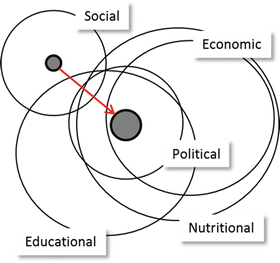
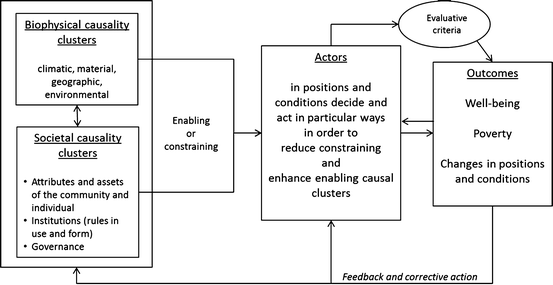

2.1 Towards the Development of a Concept
The persistence of poverty has motivated research to shift from looking at single dimension explanations towards recognizing that the causes of poverty are “complex, multifaceted, and difficult to isolate” (Haveman and Smeeding 2007, 2). As a result, poverty research has contributed to a more comprehensive understanding of the causes of poverty, and it has been recognized that the traditional methods of disciplinary science fall short of seeing and explaining the “big picture” of causal factors underlying poverty (Meinzen-Dick et al. 2004; von Braun et al. 2009, 44). These shortcomings led us to the development of a more inclusive and interdisciplinary research framework, that of marginality.
Kant (1819) noted that a concept is a general representation that is common to several specific objects. Accordingly, the concept of marginality is an abstraction of the idea that the causal complexities underlying people’s living conditions interact in ways that are at systemic margins. These conditions are far from what would be considered optimal, in balance, just, equal, sufficient, good, or fair—attributes that describe conditions and positions in human life that are enabling and supportive, and that are used to define poverty.
Despite the critiques of marginality in social science (Cullen and Pretes 2000; Del Pilar and Udasco 2004), the persistence of marginality as a concept (Dickie-Clark 1966) should be regarded as an indication of the demand to express observations of a similar kind across different epistemic cultures (Knorr Cetina 1999), and to find solutions, here, to the phenomena of poverty. The problem of measuring the degree of marginalization is that the reference is not fixed or unknown, and therefore when used as a theory marginality has been criticized for the lack of construct validity (Del Pilar and Udasco 2004, 11). In their critique, however, those authors reviewed the use of marginality as a theory and came to the conclusion that “marginality cannot work [as a theory] if it has multiple levels of meaning.” This critique of the marginality concept as a theory also rests on the belief that a concept must be a “uniform kind of mental representation” (Weiskopf 2009, 145). Weiskopf rejects this assumption in psychology and outlines a pluralist theory of concepts in which they are constituted by multiple representational kinds. In the following we present a framework for the investigation of marginality—not a theory of marginality.
Although poverty can be observed in many different forms and is caused by many different factors, all forms of poverty can be described through the concept of marginality. Someone who is poor will always be marginalized in one or more dimensions, whereas the socio-cultural context and individual perception will define in which and in how many dimensions someone needs to be marginalized in order to be considered poor. The aim of establishing a concept of marginality is therefore to better understand the various causal complexities of poverty by deepening and broadening the scope of scientific investigation through:
1.
identifying common causalities of poverty across scientific disciplines, and
2.
including phenomena that are not typically considered as poverty or contributing to poverty alone (e.g., living in harsh or resource scarce environments).
Deepening and broadening the scope of investigation thereby also includes incorporating theories and models from other (non-social science) epistemic cultures and scientific disciplines. In that sense marginality is not only a concept, but also a conceptual framework. It is a framework for different theories of poverty within which various models can be tested.
Frameworks. Theories and models are understood as “nested set[s] of theoretical concepts, which range from the most general to the most detailed types of assumptions made by the analyst” (Ostrom 2005, 27). Frameworks organize, form boundaries around the inquiry, set up general relationships among categories or dimensions, as well as define the scope and levels of the inquiry. They do not explain or predict, rather they organize the diagnostic inquiry. (Ostrom et al. 1994; Schlager 1999).
Theories. Theories explain particular parts of a framework, and therefore need to make assumptions about the patterns of relationships within frameworks. Several theories may be accommodated within a single framework. Table 2.1 presents a brief overview of classes of poverty theories and selected references. As Bradshaw (2005) argues, the choice of a theory and the definition of the problem are thereby not only scientifically motivated, but also politically influenced. O’Connor (2001, 12) mentions that poverty research is also a political act, which is influenced by biases and values of an educated elite who aims to “categorize, stigmatize, but above all to neutralize the poor and disadvantaged through analysis that obscures the political nature of social and economic inequality.”
Table 2.1
Classes of poverty theories and selected references
Classes of poverty theory | Selected references |
|---|---|
Individual deficiencies | |
Poverty is caused largely as a result of the attributes of individuals and the choices they make | |
Socio-cultural and belief systems | |
Poverty is culturally manifested and transmitted by values, beliefs, and norms (e.g., ghetto or slum subcultures) | |
Political-economic (structural) barriers | |
The political, social, and economic systems provide insufficient incentives and opportunities: shift in focus from the actors of the game to the game itself | |
Geographical and environmental disparities | |
Causes of poverty are spatial factors (e.g., distance to growth centers, marginal land and climatic conditions) |
Defining and choosing a theory means defining what is to be explained and therefore the choice of theories is also political. For example the application of neoclassical economic theory makes use of methodological individualism, which can be seen as reinforcing individualistic sources of poverty. Theories in this tradition attempt to redress the problem that “[p]overty researchers have in effect focused on who loses out at the economic game, rather than addressing the fact that the game produces losers in the first place” (Rank et al. 2003, 3). Models are then applied to further specify analyses by defining concrete assumptions and specific variables. “Logic, mathematics, game theory models, experimentation and simulation, and other means are used to explore the consequences of these assumptions systematically” (Ostrom 2005, 28).
Eventually the challenge of drawing the bigger picture of marginality includes taking a critical look at the science applied to understand the complexities of marginality itself. Here science at the margins needs to investigate which knowledge about marginality is adequate, how it influences the outcomes of the investigation, and how this knowledge should be obtained. Despite the fact that the marginality framework is open to different disciplinary approaches, different epistemic cultures (Knorr Cetina 1999), with their specific rules and norms for acquiring knowledge, do not always easily lend themselves to a synergy of findings.
2.2 Definition and Delineation of Marginality
Here we adopt the definition of marginality provided by Gatzweiler et al. (2011, 3):
an involuntary position and condition of an individual or group at the margins of social, political, economic, ecological or biophysical systems, preventing them from access to resources, assets, services, restraining freedom of choice, preventing the development of capabilities, and eventually causing (extreme) poverty.
This definition is anthropocentric and describes the position and condition of an individual, actor, or group within social, economic, and ecological systems. The position of an actor describes their place and function within social and geographical spaces. For example, actors can be the head of a cooperative or peasant association and in that position are authorized or required to make particular decisions. Their geographical position refers to where they are actually located in physical space. The condition of an actor refers to their decision-making and information processing capabilities, and the assets and resources they can make effective use of. Being marginalized means being positioned at the margin of one or more societal or spatial systems, and having few assets and/or capabilities that would allow the actor to move away from or change that marginal situation. It then depends on the theory and model applied in the investigation of marginality, and which evaluative criteria are used to measure the degree of marginality.
While it is generally agreed upon that marginality is always relative to a particular point, perspectives differ on how and by whom this point (or center) should be defined. In some cases marginality may be regarded as fixed, such as different regions, groups, or individuals that are part of a hierarchy centered on an (immobile) reference point (Cullen and Pretes 2000). This perspective is reflected in the common discourse on ‘development,’ when countries are described as either ‘developing’ or ‘developed’ along a predefined linear trajectory. Others dispute the idea of a single center, but rather define marginality depending on which one of multiple reference points is used. Thus as Dunne (2005, 15) notes, marginality can be seen as “a multidimensional phenomenon in that a given person may be simultaneously integrated with one or more centers while being marginal from one or more other centers.”
Figure 2.1 illustrates marginality in the context of a person or group by a specific position within multiple dimensions. Their position can be closer to, or further away from, the desired center. Distance needs to be understood in terms of transaction and interdependence costs (i.e., the efforts required to change and maintain a position). The condition refers to the well-being of the individual or group and is depicted by the size of the small, solid grey circles, whereby the larger of both depicts improved well-being. The circles represent different systemic (social, economic, political, nutritional, educational) dimensions of people’s lives in which they are more or less marginalized. The size of the circles indicates the importance of these dimensions to the respective actor or group.

Fig. 2.1
Changing position and condition to reduce marginality within a multidimensional system: the large circles represent systemic dimensions (social, economic, political, etc.), the two smaller shaded circles represent marginalized individuals or groups, the arrow represents the directionality of change toward the center of more than one system (reduction of marginality) (Modified from Gatzweiler et al. 2011, 15)
Our definition of marginality draws on different disciplines, including: economics, development theory, sociology, ecology, and anthropology. Marginality is frequently defined by two conceptual frameworks—spatial and social marginality (Gurung and Kollmair 2005)—that determine the manifestations and drivers of marginality (a distinction that is not always clear, however). We add ecological marginality which, in addition to the other two, draws attention to extreme values outside homeostatic ranges of living systems (see Callo-Concha et al., Chap. 4 this volume). Spatial marginality tends to focus on the distance or connectivity of geographical areas in relation to centers of economic activity at different geographical scales (e.g., globally or regions within a country). In this context economic determinants tend to be seen as the main drivers of marginality based on center-periphery or core-periphery models, where one region is the center and the others are marginal (Cullen and Pretes 2000).
Social marginality is concerned with “human dimensions such as demography, religion, culture, social structure (e.g., caste, hierarchy, class, ethnicity, gender), economics, and politics in connection with access to resources by individuals and groups” (Gurung and Kollmair 2005, 10). Research into social marginality examines the underlying reasons for exclusion, inequality, social injustice, and the spatial segregation of people. Marginalization is seen here as a social construction, with socio-political power as the central determinant (Cullen and Pretes 2000). Social marginality can also lead to spatial marginality, for instance in cases where ethnic groups are displaced to disadvantaged geophysical regions.
In the study of spatial marginality, the investigation of factors driving the emergence of spatially divergent growth paths within countries has emerged as an important research area in economics, including the fields of location theory, urban economics, and economic geography (Fujita and Thisse 2009). This line of research originated from the work of von Thünen (1826) and his attempts to model the location of agricultural production in relation to markets. Since the early 1990s, drivers and dynamics of economic concentration have attracted renewed interest among economists, in particular through the work of Krugman in the field of ‘new economic geography’ (e.g., Krugman 1991, 1999; Krugman and Venables 1995).
Two sets of geographical factors—first- and second-nature geography—are commonly identified as determinants shaping the spatial distribution of economic activity (World Bank 2008). First-nature geography refers to the geographical endowments of certain regions such as proximity to coasts, rivers, borders, or ports, which may underlie economic success (e.g., of Chinese coastal zones or Mexican border regions close to the USA). Gallup et al. (1999) highlight such geographic factors as some of the key determinants of industrial location, such as the extent of a country’s land area located in the tropics, concentration of populations in relationship to the interior versus coasts, access to maritime transport routes, and distance to core markets.
Second-nature geography relates to the interactions between economic agents, and in particular economies of scale that can be achieved through agglomeration and economic concentration (World Bank 2008). These factors have been the focus of work by Krugman (1999), who argues that the emergence of an industrial core is largely (though not exclusively) driven by centripetal forces in the form of backward and forward linkages in the growth centers (e.g., a large pool of suppliers and/or consumers), thick labor markets, and information spillovers. Forces counteracting these drivers—what Krugman refers to as centrifugal forces—include the availability of immobile factors in certain regions, increased demand and prices for land in areas characterized by economic concentration, and external diseconomies (such as congestion).
In this context the center tends to be defined through certain indicators and performance may be judged in relation to a particular average or the performance of leading regions. Some categorizations of regional development focus on economic indicators, such as income, consumption, or GDP per capita (e.g., World Bank 2008; Ghani 2010). Others compare regions on the basis of more diverse socio-economic indicators. For instance, in Mexico the federal government has developed a marginality index that ranks regions according to their performance in terms of education, housing, monetary income, and distribution of the population (CONAPO 2005). What these approaches have in common is that they tend to evaluate regions in relation to a particular reference point and performance indicator for economic or human development.
Spatial marginality is also reflected in the field of development theory, notably through Latin American structuralisms, dependency theory, and world systems theory, which generally focus on nation states (and the world) as the unit of analysis. Starting with Prebisch in the 1940s and developed by leading economists and sociologists such as Furtado, Gunder Frank, and Wallerstein, this line of thinking contends that the global market is divided into powerful and technologically advanced economies (the center), and relatively weak peripheral economies (the periphery) that supply raw material and low-tech manufacturing (Preston 2002). The underdevelopment of periphery economies is thus a result of their position in the global (capitalist) system. To understand and address problems of underdevelopment Wallerstein argued that it is necessary to look at the global system as a whole rather than at individual nation states.
In the social sciences the concept of marginality can be traced back to Park’s essay “Human Migration and The Marginal Man” published in 1928 and Stonequist’s (1937) elaboration of the concept a decade later. Park saw the ‘marginal man’ as a personality type that emerges as a consequence of migration. Thus a ‘marginal man’ is “a cultural hybrid, a man living and sharing intimately in the cultural life and traditions of two distinct peoples” (Park 1928, 892). This form of marginalization can lead to social disorganization, but also social reconstruction where the marginalized become intermediaries between cultures.
Park’s and Stonequist’s thinking influenced North American sociologists in particular, who developed the idea over time. Marginality is generally seen from the perspective of the individual or group. While debates initially focused on issues of race and ethnic relations, the concept was later extended to the study of occupations, gender, and scientific innovation (Goldberg 2012). Others have also sought to broaden the concept to include anyone who in one way or another is marginalized from one or more social groups (e.g., Hughes 1949; Deegan 2002). For instance, Deegan defines a “marginal person” as anyone whose “perception of self, experience of the world, and access to material resources” do not fit the prevailing society or culture (Deegan 2002 cited in Goldberg 2012, 208).
Yet others have turned their focus to groups of individuals in similar situations that may share a common marginal culture or identity. Goldberg (1941, 53) was the first to argue that marginal individuals may give rise to a marginal culture over time, that is “every bit as real and complete to him as is the nonmarginal culture to the nonmarginal man.” Thus a subculture may be marginalized vis-à-vis the prevailing culture, but the individual may not feel marginal within this new subculture. In some cases a group may in fact choose to remain outside of the dominant culture in order to preserve their own identities and independence (Scott 2009). Using the case of the Haitian diaspora in Guadeloupe, Brodwin (2003, 403) illustrates how a group’s self-definition (or subjectivity) is indeed shaped by the “experience of marginalization in a specific time and place.” Wright and Wright (1972) distinguish between three types of marginality that characterize groups: cultural marginality (shared behavior patterns), psychological marginality (shared attitudes), and social marginality (patterned interrelationships).
Our units of analysis are the marginalized poor (i.e., individuals or groups that are affected both by marginality and poverty). To define the ‘center,’ we draw on Sen’s capability approach (e.g., Sen 1979, 1992, 1999). A person’s pursuit of well-being is shaped by what someone has chosen or been able to achieve their “functionings” (Crocker 1992, 585). The extent of potential “functionings” is in turn determined by the person’s capabilities (i.e., what they can feasibly achieve). What people choose to do may differ even if they have the same capabilities as one another. Resources or commodities then simply become the means for achieving well-being. Thus we define the center as the place where individuals or groups are able to realize the desired “functionings” within their capabilities that lift them out of poverty. The ability to do so will be determined by individual characteristics, social institutions, and the geophysical context (Dissart et al. 2008).
Marginality can influence this process at different stages. It may restrict people’s access to resources, for instance where people live in geo-physically disadvantaged areas characterized by poor soils or limited water resources. Marginality may also influence what a person may be able to achieve, for instance, where people or groups are excluded from certain opportunities due to their gender (e.g., reduced school attendance among girls in some patriarchal cultures) or ethnicity (e.g., preference given to certain ethnic groups over others with respect to assuming positions of authority). Finally, marginality can influence a person’s ability to take advantage of the opportunities that are open to them. Here it is important to note that the potential “functionings” that someone may regard as achievable can also be shaped by marginality, given that the experience of marginality influences how individuals and groups define themselves, their opportunities, and their abilities (Brodwin 2003).
We regard this as a dynamic and circular process where marginality can function both as a cause and a consequence of poverty. Also the different determinants, types, and outcomes of marginality are often interrelated. For instance, marginality in education is influenced by factors such as poverty, language, stigmatization of certain groups (e.g., on ethnic, cultural, or gender grounds), and legal rights (UNESCO 2010). As already noted, social marginality (e.g., due to ethnicity or income), can also lead to spatial marginality, as witnessed in urban ghettos or the relocation of certain groups to remote or less productive land, which in turn leads to marginalization from jobs, services, education, or infrastructure.
2.3 Components of the Conceptual Framework
The marginality framework takes into account the diversity of causes of people living in poverty. As this diversity of factors causing poverty is frequently clustered, it has been referred to as “causal complexes” or “marginality patterns” by Gatzweiler et al. (2011, 9). Examples of such patterns are low agricultural productivity caused by an inability to irrigate as a result of water shortages due to low water tables and the lack of collective action resulting from central planning that in turn cause critical human health conditions under which the elderly, woman, and children suffer most and therefore cannot contribute their labor or receive education, which limits their ability to change or escape the systems they are part of. Causal complexes that are self-referential systemic feedback loops are also referred to as ‘poverty traps’ (Dasgupta 2009).
Marginality is caused by complexes of interrelating factors that are seldom directly observable. Conceptualizing marginality in terms of causal complexes or networks requires shifting the focus from isolated causal entities to the relationships among them. Understanding these causal complexes of marginality better—instead of merely understanding correlations between a few variables and poverty—contributes to a better understanding of the behavior of socio-ecological systems, and to our ability to design policies and programs that are more responsive to the needs of the marginalized poor.
The general question behind the conceptual framework concerns the causal complexities and how they can be changed in order to improve livelihoods and reduce poverty. This framework is inspired by the Institutional Analysis and Development framework of Ostrom et al. (1994) and the Institutions of Sustainability (IoS) framework of Hagedorn (2008), and consists of the components shown in Table 2.2.
Table 2.2
Components of the framework for the analysis of marginality
Actors | Decide and act on, and in particular positions and conditions |
Follow strategies, interact and coordinate in particular ways at different levels of organization | |
Engage in rule-making themselves | |
Biophysical and societal variables | Composed of the enabling or constraining social and biophysical environments (biophysical, climatic, material, environmental conditions) |
Societal conditions | Attributes and assets of the community and the individual |
Institutions (rules in use and in form at various levels of decision making) | |
Governance (coordination mechanisms and strategies) | |
Outcomes | Well-being, poverty, degree of marginalization |
Evaluative criteria (re/evaluate position and condition of an actor by criteria selected according to the theory and model applied, the criteria measure particular, not all aspects of marginality) | |
Feedback and corrective action (actions based on outcomes and aimed at changing the enabling or constraining variables as well as the way actors have made decisions and behave) |
The marginality framework groups the causal complexes into societal and biophysical clusters. Societal causes refer to ‘software’ variables and include the capabilities of actors and communities, their social and human capital, the rules and regulations they have set up for their societies to function, and the ways in which rules are made and executed. Biophysical causes include ‘hardware’ variables such as geographic location, soil quality, vegetation, and climate, but also man-made capital (infrastructure) such as roads and buildings. Both groups have enabling or constraining impacts on how actors make decisions and act.
Actors behave according to certain types of rationality in order to improve their societal position or geographical location and their condition. Depending on the theories and models applied, the actors’ rationality is a function of the institutional setting in which they act, and their condition includes the assets and opportunities they have for establishing and improving their level of well-being and degree of marginalization. Vatn (2005, 113) explains that what is considered rational depends on the institutional context, and as this context can vary, so can the meaning of rationality and the assumed objective of rational behavior. Maximizing individual utility by means of rational choice is assumed in neoclassical economics and with this type of rationality come the assumptions of a particular institutional setting in which the actors make decisions. Recognizing that information for making choices comes at a cost leads to bounded rationality and satisficing rationality (Simon 1957, 1959), and recognizing the fact that people behave socially, and that mutually responsive implies different types of social rationality (Etzioni 1988; Gintis 2000; Ostrom 2000). Which rationality is applied depends on the theories and models applied in the investigation of marginality (Fig. 2.2).

Fig. 2.2
Conceptual framework for the investigation of marginality: actors are in particular positions and conditions, and make decisions that are enabled or constrained by biophysical or societal factors, as part of the causality clusters (actors’ decisions result in outcomes that change their well-being, measured by evaluative criteria, and also change the enabling and constraining factors for decision making in the next round)
Ideally the outcomes of actors’ decisions and actions improve their well-being and reduce poverty. Alternatively the outcomes can be measured as the relative change in the positions and conditions of the actors. Frequently, however, the poor are caught in a constraining environment that prevents them from improving their positions and conditions. Ideally feedback mechanisms would send signals to actors at higher decision-making levels and allow them to change critical variables in the causality clusters, changing the environment from constraining to enabling. For example, improving land tenure security in the Ethiopia would be expected to motivate owners to make long-term investments into land and productivity gains (Deininger et al. 2003).
2.4 Conclusions
In this chapter we have explained the opportunities and the need for research on marginality that include the views from multiple disciplines on multiple dimensions of poverty. Reducing the diversity of poverty to a few indicators in order to facilitate its measurement entails the risk of overlooking critical features and causalities underlying poverty that may be detected when poverty is evaluated from a systems perspective. In recognition of the diversity of poverty dimensions and their irreducible and partly incommensurable nature, we have proposed a conceptual framework and described its components and relationships. Institutions play a particular role in explaining causal relationships among different types of marginality.
References
Acemoglu D, Robinson J (2012) Why nations fail: the origins of power, prosperity, and poverty. Crown Business, New York
Bhalla A, Lapeyre F (1997) Social exclusion: towards an analytical and operational framework. Dev Chang 28(3):413–433CrossRef
Bradshaw TK (2005) Theories of poverty and anti-poverty programs in community development. Rural Poverty Research Center, University of Missouri and Oregon State University, Columbia
Bradshaw T, Muller B (2004) Shaping policy decisions with spatial analysis. In: Goodchild MF, Janelle DG (eds) Spatially integrated social science: examples in best practice. Oxford University Press, New York, pp 300–322
Brodwin P (2003) Marginality and subjectivity in the Haitian Diaspora. Anthropol Q 76(3):383–410CrossRef
CONAPO (2005) Índice De Marginación a Nivel Localidad 2005. Consejo Nacional de Población, Mexico DF. http://www.conapo.gob.mx/index.php? option= com_content&view=article&id=46&Itemid=194. Accessed 18 Feb 2012
Crocker DA (1992) Functioning and capability: the foundations of Sen’s and Nussbaum’s development ethic. Polit Theory 20(4):584–612CrossRef
Cullen BT, Pretes M (2000) The meaning of marginality: interpretations and perceptions in social science. Soc Sci J 37(2):215–229CrossRef
Dasgupta P (2003) World poverty: causes and pathways. Plenary lecture delivered at the world bank’s Annual Bank Conference on Development Economics (ABCDE), Faculty of Economics, University of Cambridge, Bangalore, 21–22 May 2003
Dasgupta P (2009) Poverty traps: exploring the complexity of causation. In: von Braun J, Hill RV, Pandya-Lorch R (eds) The poorest and hungry: assessments, analyses, and actions. International Food Policy Research Institute, Washington, DC, pp 129–154
Dasgupta P, Mäler K-G (1994) Poverty, institutions and the environment-resource base. World Bank Environment paper no 9, World Bank, Washington, DC
Deegan MJ (2002) Race, hull-house, and the University of Chicago: a New conscience against ancient evils. Praeger, Westport
Deininger K, Jin S, Adenew B, Gebre-Selassie S, Nega B (2003) Tenure security and land-related investment: evidence from Ethiopia. Research working paper 2991, World Bank, Washington, DC
Del Pilar JA, Udasco JO (2004) Marginality theory: the lack of construct validity. Hisp J Behav Sci 26(1):3–15CrossRef
Dellink RB, Ruijs A (2008) Economics of poverty, environment and natural resource use. Springer, Dortdrecht
Desai RM (2007) The political economy of poverty reduction. Wolfensohn Center for Development working papers no. 2, Brookings Institution, Washington, DC
Diamond J (2011) Collapse: how societies choose to fail or succeed. Penguin Press, New York
Dickie-Clark HF (1966) The marginal situation: a sociological study of a coloured group. Routledge and Kegan Paul, London
Dissart J, Bresson F, Lallau. B (2008) Assessing rural marginality: contribution of the capability approach. Paper presented at the annual conference of the Human Development and Capability Association (HDCA), New Delhi, 10–13 September 2012. http://www.capabilityapproach.com/pubs/Dissart%5B1%5D.Bresson.Lallau-HDCA.pdf. Accessed 19 Feb 2012
Dunne RJ (2005) Marginality: a conceptual extension. In: Dennis RM (ed) Marginality, power, and social structure, vol 12, Issues in race, class, and gender analysis. Elsevier, Oxford, pp 11–28
Duraiappah AK (2004) Exploring the links: human well-being, poverty and ecosystem services. International Institute for Sustainable Development and United Nations Development Program, Winnipeg
Etzioni A (1988) The moral dimension: toward a new economics. Free Press, New York
Fujita M, Thisse J-F (2009) New economic geography: an appraisal on the occasion of Paul Krugman’s 2008 Nobel prize in economic sciences. Reg Sci Urban Econ 39(2):109–119CrossRef
Gallup JL, Sachs JD, Mellinger AD (1999) Geography and economic development. Int Reg Sci Rev 22(2):179–232CrossRef
Gatzweiler F, Baumüller H, von Braun J, Ladenburger C (2011) Marginality: addressing the root causes of extreme poverty. ZEF working paper no 77, Center for Development Research, University of Bonn, Bonn
Ghani E (2010) Development disparities and peculiarities. In: Ghani E (ed) The poor half billion in south Asia: what is holding back lagging regions? Oxford University Press, Oxford, pp 29–63
Gintis H (2000) Beyond homo oeconomicus: evidence from experimental economics. Ecol Econ 35:311–322CrossRef
Goldberg M (1941) A qualification of the marginal man theory. Am Sociol Rev 6(1):52–58CrossRef
Goldberg CA (2012) Robert Park’s marginal man: the career of a concept in American sociology. Laboratorium 4(2):199–217
Goldsmith WW, Blakely EJ (1992) Separate societies: poverty and inequality in American cities. Temple University Press, Philadelphia
Gurung GS, Kollmair M (2005) Marginality: concepts and their limitations. IP6 working paper, Swiss National Centre of Competence in Research North South, Bern
Gwartney J, McCaleb TS (1985) Have antipoverty programs increased poverty. Cato J 5(5):1–16
Hagedorn K (2008) Segregating and integrating institutions—a dichotomy for nature related institutional analysis. In: Schäfer C, Rupschus C, Nagel UJ (eds) Enhancing the capacities of agricultural systems and producers, proceedings of the second green week scientific conference, 16–17 January 2008. Weikersheim, Margraf
Hamilton D (1967) The political economy of poverty: institutional and technological dimensions. J Econ Issues 1(4):309–320
Haveman R, Smeeding T (2007) Poverty policy and poverty research over four decades. Focus 25(1):1
Herrnstein RJ, Murray C (1994) The bell curve. Free Press, New York
Hughes EC (1949) Social change and status protest: an essay on the marginal man. Phylon 10(1):58–65
Jencks C (1996) Can we replace welfare with work? In: Darby MR (ed) Reducing poverty in America. Sage, Thousand Oaks, pp 69–81
Kant E (1819) Logic. First part general doctrine of elements, first section: conceptions, translated from German by Richardson J, printed for W Simpkin and R Marshall, Stationers’ Court, London
Kapp KW (1963) The social costs of business enterprise. Spokesman, Nottingham
Knorr Cetina K (1999) How the sciences make knowledge. Harvard University Press, Cambridge/London
Krugman P (1991) Increasing returns and economic geography. J Polit Econ 99(3):483–499CrossRef
Krugman P (1999) The role of geography in development. Int Reg Sci Rev 22(2):142–161CrossRef
Krugman P, Venables AJ (1995) Globalization and the inequality of nations. Q J Econ 110(4):857–880CrossRef
Lewis O (1998) The culture of poverty. Society 35(2):7CrossRef
Marx K (1867) Das Kapital. Kritik der Politischen Ökonomie. Verlag von Otto Meissner, Hamburg
Mbakogu IA (2004) Is there really a relationship between culture and development? Anthropologist 6(1):37–43
Meinzen-Dick R, Adato M, Haddad L, Hazell P (2004) Science and poverty. An interdisciplinary assessment of the impact of agricultural research. Food policy report, International Food Policy Research Institute, Washington, DC
Moynahan D (1965) The Negro family. US Department of Labor, Office of Policy Planning and Research, Washington, DC
Murray C (1984) Losing ground. Basic, New York
North DC, Wallis JJ, Weingast BR (2009) Violence and social orders: a conceptual framework for interpreting recorded human history. Cambridge University Press, New YorkCrossRef
Nussbaum M, Sen A (1993) The quality of life. Clarendon Press, OxfordCrossRef
O’Connor A (2001) Poverty knowledge. Princeton University Press, Princeton
Ostrom E (2000) Collective action and the evolution of social norms. J Econ Perspect 14(3):137–158CrossRef
Ostrom E (2005) Understanding institutional diversity. Princeton University Press, Princeton/Oxford
Ostrom E, Gardner R, Walker J (1994) Rules, games, and common pool resources. University of Michigan Press, Ann Arbor
Park RE (1928) Human migration and the marginal man. Am J Sociol 33(6):881–893CrossRef
Pingali P (2003) Sustaining food security in the developing world: the top five policy challenges. Q J Int Agric 42(3):261–272
Pingali PL, Alinovi L, Sutton J (2005) Food security in complex emergencies: enhancing food system resilience. J Disaster Stud Policy Manag 29(1):5–24
Polanyi K (1944) The great transformation. The political and economic origins of our time. Beacon Press, Boston
Preston PW (2002) Development theory: an introduction. Blackwell Publishers, Oxford
Putnam R (1993) Making democracy work: civic tradition in modern Italy. Princeton University Press, Princeton
Putnam R, Helliwell JF (1995) Social capital and economic growth in Italy. Eastern Econ J 21:295–307
Rainwater L (1970) Neutralizing the disinherited: some psychological aspects of understanding the poor. In: Allen VL (ed) Psychological factors in poverty. Markham, Chicago, pp 9–28
Rank MR, Yoon HS, Hirschl TA (2003) American poverty as a structural failing: evidence and arguments. J Sociol Soc Welfare 30(4):3–29
Roland G (2004) Fast-moving and slow-moving institutions. CESifo DICE Report 2. http://www.cesifo-group.de/portal/pls/portal/docs/1/1193608.pdf. Accessed 12 Feb 2012
Ryan W (1976) Blaming the victim. Vintage, New York
Schlager E (1999) A comparison of frameworks, theories and models of policy processes. In: Sabatier PA (ed) Theories of the policy process. Westview, Boulder, pp 233–260
Scott JC (2009) The Art of Not being governed: an anarchist history of upland Southeast Asia. Yale University Press, New Haven
Sen A (1979) Equality of what? In: McMurrin SM (ed) The tanner lectures on human value. University of Utah Press, Salt Lake City, pp 195–220
Sen A (1982) Poverty and famines: an essay on entitlements and deprivation. Oxford University Press, Oxford
Sen A (1992) Inequality reexamined. Harvard University Press, Cambridge
Sen A (1999) Development as freedom. Harvard University Press, Cambridge
Shaw W (1996) The geography of United States Poverty. Garland Publishing, New York
Simon HA (1957) Models of man. Wiley, New York
Simon HA (1959) Theories of decision making in economics and behavioral science. Am Econ Rev 49:253–258
Small ML, Harding DJ, Lamont M (2010) Reconsidering culture and poverty. Ann Am Acad PolSoc Sci 629(1):6–27CrossRef
Smith A (1776) The wealth of nations, reprinted 1997. Penguin Books, London
Stonequist EV (1937) The marginal man: a study in personality and culture conflict. Charles Scribner’s Sons, New York
Tobin J (1994) Poverty in relation to macroeconomic trends, cycles, policies. In: Danzinder SH, Sandefur GD, Weinberg DH (eds) Confronting poverty: prescriptions for change. Harvard University Press, Cambridge, pp 147–167
UNDP (1998) Human development report 1998. United Nations Development Programme, Oxford University Press, Oxford/New York
UNESCO (2010) Education for All global monitoring report—reaching the marginalized. United Nations Educational, Scientific and Cultural Organization, Paris
Valentine CA (1968) Culture and poverty. University of Chicago Press, Chicago
Vatn A (2005) Institutions and the environment. Edward Elgar, Cheltenham
von Braun J, Hill RV, Pandya-Lorch R (eds) (2009) The poorest and hungry: assessments, analyses, and actions. International Food Policy Research Institute, Washington, DC
von Thünen JH (1826) Der Isolierte Staat in Beziehung Auf Landwirtschaft Und Nationalökonomie. Perthes, Hamburg
Weber M (2001) Protestant ethic and the spirit of capitalism. Routelege, New York
Weber B, Jensen L (2004) Poverty and place: a critical reivew of ruarl poverty literature. Working paper 04–03, Rural Poverty Research Center, University of Missouri and Oregon State University, Columbia
Weiskopf DA (2009) The plurality of concepts. Synthese 169(1):145–173CrossRef
World Bank (2008) World development report 2009. World Bank, Washington, DCCrossRef
Wright RD, Wright SN (1972) A plea for a further refinement of the marginal man theory. Phylon 33(4):361–368CrossRef